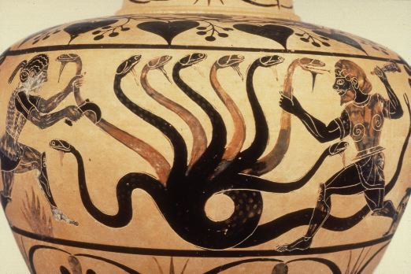

Selection & Description
For this reception project, I chose the 1997 Disney animated film Hercules, directed by John Musker and Ron Clements. This film was one of my earliest exposures to Greek mythology, and its imaginative take on the myth of Herakles has stayed with me since childhood.
Its blend of musical comedy, stylized animation, and mythological characters made it both engaging and memorable. The film follows Hercules, a young man with godlike strength, who sets out to prove himself a true hero so he can reclaim his place on Mount Olympus. Along the way, he battles monsters, learns humility, and discovers love.
Disney's Hercules is a product of popular American entertainment that blends ancient myth with modern storytelling. Its themes include identity, heroism, perseverance, and the value of selflessness.
"I will find my way, I can go the distance. I'll be there someday, if I can be strong."
— "Go the Distance," Hercules (1997)
Mythological Source
The film adapts the myth of Herakles, a central figure in Greek mythology known for his divine strength and tragic life. Born the son of Zeus and the mortal Alcmene, Herakles is subject to Hera's wrath and is driven to madness, which causes him to murder his wife and children. To atone, he must complete the famous Twelve Labors, a series of nearly impossible tasks. Over time, Herakles is celebrated for his strength and perseverance, and eventually becomes immortal through apotheosis—his elevation to divine status.
Key Elements
- Divine birth (son of Zeus and Alcmene)
- Twelve Labors as atonement
- Apotheosis and divine status
- Tragic elements and redemption
The Twelve Labors:
- Slay the Nemean Lion
- Slay the Lernaean Hydra
- Capture the Ceryneian Hind
- Capture the Erymanthian Boar
- Clean the Augean Stables
- Defeat the Stymphalian Birds
- Capture the Cretan Bull
- Steal the Mares of Diomedes
- Obtain the Girdle of Hippolyta
- Steal the Cattle of Geryon
- Steal the Apples of the Hesperides
- Capture Cerberus
"Herakles, born of Zeus and mortal Alcmene, completed twelve labors as penance for killing his family in a madness sent by Hera."
— Classical Myth
Myth vs. Movie Comparison
Toggle to compare how Disney adapted the original myth
Origins
Classical Myth
Herakles is born a demigod, son of Zeus and the mortal woman Alcmene. Zeus deceived Alcmene by taking the form of her husband Amphitryon.
Disney's Version
Hercules is born a full god on Mount Olympus to Zeus and Hera, then turned mortal (but retaining his strength) by Hades' minions.
Hera's Role
Classical Myth
Hera is Herakles' nemesis, sending serpents to kill him as an infant and later driving him to madness that causes him to kill his family.
Disney's Version
Hera is portrayed as Hercules' loving mother who welcomes him back to Olympus and supports him throughout.
The Twelve Labors
Classical Myth
Herakles must complete 12 specific, nearly impossible tasks (like slaying the Nemean Lion and capturing Cerberus) as penance for killing his family.
Disney's Version
Hercules faces a training montage and a series of heroic acts, including defeating the Hydra, but the formal structure of 12 labors is absent.
Megara
Classical Myth
Megara is Herakles' first wife whom he tragically murders during his madness (along with their children).
Disney's Version
Meg is a witty, independent woman who sold her soul to Hades and becomes Hercules' love interest.
Nessus
Classical Myth
Nessus plays a tragic role in Herakles' death. After Herakles defeats him, the dying centaur gives Deianeira (Herakles' wife) a poisoned robe that eventually causes Herakles' death and apotheosis.
Disney's Version
Nessus is portrayed as a comic villain who harasses Megara. Hercules defeats him in an early heroic act, demonstrating his physical strength but lack of finesse.
Apotheosis
Classical Myth
Herakles achieves godhood after his death, when his mortal part burns away on a funeral pyre and his divine essence ascends to Olympus.
In the original myth, Herakles is poisoned by the blood of the centaur Nessus on a robe given to him by his wife Deianeira. The pain is so unbearable that he builds his own funeral pyre on Mount Oeta and asks to be burned alive. As his mortal flesh burns away, his divine essence—inherited from his father Zeus—ascends to Mount Olympus, where he is welcomed as a god.
Disney's Version
Hercules achieves godhood by willingly sacrificing himself to save Megara, proving he's a "true hero."
Disney reframes apotheosis as a reward for selfless sacrifice rather than the result of suffering. When Hercules dives into the River Styx to rescue Megara's soul, he willingly accepts death, demonstrating that "a true hero isn't measured by the size of his strength, but by the strength of his heart." This moral choice—rather than divine heritage—is what ultimately earns him godhood.
Preservation of the Ancient Story
Despite its major changes, Disney's Hercules preserves several key elements of the original myth:
- Characters: Names like Hercules (Herakles), Zeus, Hera, Megara, and Nessus are retained.
- Challenges: Hercules faces mythological monsters (e.g., the Hydra and Nessus) as part of his heroic journey.
- Divine Heritage: He is still portrayed as the son of Zeus with godlike abilities.
- Apotheosis: The film ends with Hercules regaining his place among the gods on Mount Olympus, mirroring his mythological apotheosis.
These parallels ground the film in its mythological roots, even as the story is modified for a younger, modern audience.
"That's Phil's boy! That's my boy!"
— Zeus, Hercules (1997)

Adaptation & Change
Disney significantly reshapes the myth to make it more family-friendly and morally uplifting:
- Hercules' Origins: In the film, Hercules is born a god but is turned mortal by Hades. In the myth, Herakles is a demigod from birth, the product of Zeus's affair.
- Hera's Role: Hera is portrayed as a loving mother, whereas in the myth, she is Herakles' chief antagonist.
- Megara: Meg is reimagined as a witty love interest working for Hades. In the myth, Megara is Herakles' wife whom he tragically kills in his madness.
- Motivation: The original Herakles seeks redemption for past sins; Disney's Hercules seeks to prove himself a hero to regain his divine status.
- Twelve Labors: These iconic tasks are replaced with a montage of monster-slaying for entertainment value and pacing.
"A true hero isn't measured by the size of his strength, but by the strength of his heart."
— Zeus, Hercules (1997)
Mythological Hera
Disney's Hera
Interpretation & Meaning
Disney's Hercules transforms a myth of guilt and redemption into a tale of self-discovery and moral heroism. The message of the film is that true heroism comes from self-sacrifice, not physical strength. This is emphasized when Hercules willingly offers his life to save Megara, an act that leads to his apotheosis.
This reinterpretation reflects contemporary values:
- Individualism: The film highlights Hercules' personal journey to discover who he truly is.
- Love and Redemption: Romantic love becomes a transformative force, replacing the tragedy of the original myth.
- Optimism and Accessibility: The darker elements of Herakles' story are rewritten to inspire and uplift rather than terrify.
"People always do crazy things... when they're in love."
— Megara, Hercules (1997)
Apotheosis: Transformation of Meaning
The Classical Apotheosis
In the original myth, Herakles achieves apotheosis (elevation to godhood) through a complex series of events:
- Final suffering: After being poisoned by the blood of Nessus, Herakles experiences excruciating pain
- Funeral pyre: He builds his own funeral pyre and asks to be burned alive to end his torment
- Divine transition: As his mortal flesh burns away, his divine essence—his immortal part from his father Zeus—rises to Mount Olympus
- Reconciliation: In some versions, he reconciles with Hera and even marries her daughter Hebe
This transformative process emphasizes several key themes in Greek thought:
- Purification through suffering
- The separation of mortal and divine elements
- The necessity of death before transcendence
- Godhood as divine judgment and recognition of worth
"The gods, impressed by his courage, received him into heaven, where he was reconciled with Hera and married her daughter Hebe."
— Apollodorus
Disney's Reimagined Apotheosis
Disney's adaptation radically transforms this concept:
- Active choice vs. passive reward: Hercules actively sacrifices himself to save Megara rather than seeking release from suffering
- Moral achievement vs. divine judgment: His godhood is earned through proving himself a "true hero" by demonstrating selflessness
- Maintained identity: No separation of mortal/divine parts—his whole self is transformed
- Romantic resolution: He chooses to remain mortal to be with Megara rather than claiming his divine birthright
Cultural Significance
This transformation reflects profound shifts in modern Western values:
- Individualism: Emphasizes personal choice and agency over fate or divine will
- Meritocracy: Divine status is earned through moral action rather than bloodline or divine favor
- Romantic love: Elevates romantic partnership above divine privilege (a very modern concept)
- Moral simplification: Presents a clear, understandable moral framework accessible to children
- Secularization: Reframes divine transformation as ultimately less desirable than human connection
"A true hero isn't measured by the size of his strength, but by the strength of his heart."
— Zeus, Hercules (1997)
Broader Cultural Connections
American Dream Narrative
Disney's version transforms the Greek myth into a recognizable American "work hard and achieve your dreams" story, where divine status is earned through merit rather than bloodline—a reflection of American meritocratic ideals.
Changing Religious Sensibilities
The film's emphasis on self-sacrifice and "heart" over ritual purification or divine judgment reflects Christian influences on Western moral frameworks, while simultaneously embodying the increasing secularization of society.
Modern Heroism
By prioritizing Hercules' choice to remain mortal for love, Disney presents a contemporary view that sees transcendence and divinity as less fulfilling than human connection and emotional authenticity.
The classical apotheosis emphasizes suffering, purification, and divine judgment
Disney's version emphasizes choice, selflessness, and moral achievement
Visual Gallery
Explore both ancient depictions of Herakles and Disney's modern reinterpretations.
The birth of Herakles
Herakles battles the Hydra
Herakles and the Nemean Lion
The Twelve Labors of Herakles
The apotheosis of Herakles
Herakles and the centaur Nessus

Frequently Asked Questions
Disney significantly altered the story for several reasons:
- To make it appropriate for a family audience (removing infanticide, madness)
- To create a more straightforward hero's journey narrative structure
- To align with Disney's brand values of optimism and self-discovery
- To create opportunities for musical sequences and comedic elements
This is consistent with Disney's approach to other myths and fairy tales, where darker elements are often softened or transformed.
Apotheosis refers to the elevation of a person to divine status—essentially, becoming a god. In Greek mythology, this was a rare honor reserved for exceptional heroes.
In Herakles' original myth, apotheosis comes after death and suffering, serving as the ultimate redemption. Disney preserves this key element but changes how it's achieved:
- Original myth: Apotheosis through death and divine judgment
- Disney: Apotheosis through selfless sacrifice and proving "true heroism"
This reflects modern values that prioritize moral choices over fate or divine judgment.
Disney's adaptation reflects several contemporary values and concerns:
- Identity: Hercules' quest to find where he belongs resonates with modern themes of self-discovery
- Merit vs. Birth: The idea that heroism is earned through actions rather than inherited aligns with democratic values
- Celebrity Culture: The film satirizes fame through Hercules' merchandise and fans
- Love as Redemptive: The romantic subplot offers a modern, optimistic view of relationships as transformative
These themes make the ancient story relatable to contemporary audiences while maintaining some connection to its mythological roots.
Conclusion
Disney's Hercules is a prime example of classical reception: a vivid reimagining that adapts ancient myth for modern sensibilities. While it departs significantly from the source material, especially in its treatment of character motivations and tone, it retains essential mythic elements and offers a contemporary message about identity, sacrifice, and the meaning of heroism.
Most importantly, the film's treatment of apotheosis—transforming it from an outcome of suffering into a reward for selflessness—reflects a profound shift in cultural values. Through these adaptations, the film introduces classical mythology to a new generation in an accessible and meaningful way, reflecting both the enduring power of ancient stories and the creative possibilities of reinterpretation.
Image Sources
All images are used for educational purposes. Below are the sources for all images used in this project.
Classical Sources
-
Birth of Herakles
Ancient Greek vase painting, depicting the birth of Herakles, ca. 5th century BCE.
-
Hercules and the Hydra
Metropolitan Museum of Art, ca. 525-520 BCE. Attic black-figured lekythos, attributed to the Diosphos Painter.
-
Hercules and the Nemean Lion
Metropolitan Museum of Art, ca. 540-530 BCE. Attic black-figured amphora.
-

Hercules and the Hydra (Vase Painting)
Caeretan black-figure hydria, ca. 525 BCE. Louvre Museum.
-
Hercules and Nessus
Attic black-figure amphora, ca. 580 BCE. Staatliche Antikensammlungen, Munich.
-
The Twelve Labors
Greek mosaic depicting Herakles and several of his labors, Roman period, ca. 3rd century CE.
-
Megara
Classical depiction of Megara, Herakles' first wife. Roman fresco, 1st century CE.
-
The Apotheosis of Hercules
Ancient Greek vase painting depicting Herakles' apotheosis and reception on Mount Olympus, ca. 480-470 BCE.
Disney Sources
-
Hercules (1997)
© 1997 Walt Disney Pictures. Directed by John Musker and Ron Clements.
All Disney images are from this film and are used for educational purposes under fair use.
-
Hercules Movie Poster
© 1997 Walt Disney Pictures. Official theatrical release poster for Disney's Hercules.
-
Baby Hercules
© 1997 Walt Disney Pictures. Film still showing baby Hercules on Mount Olympus.
-
Hercules vs. Nessus
© 1997 Walt Disney Pictures. Film still from Disney's Hercules.
-
Megara
© 1997 Walt Disney Pictures. Film still of Megara from Disney's Hercules.
-
Hera and Baby Hercules
© 1997 Walt Disney Pictures. Film still showing Hera with baby Hercules.
-
Hercules' Apotheosis
© 1997 Walt Disney Pictures. Film still showing Hercules' transformation into a god.
Fair Use Statement
This project uses copyrighted material for educational purposes under the fair use doctrine. All images remain the property of their respective owners and copyright holders.